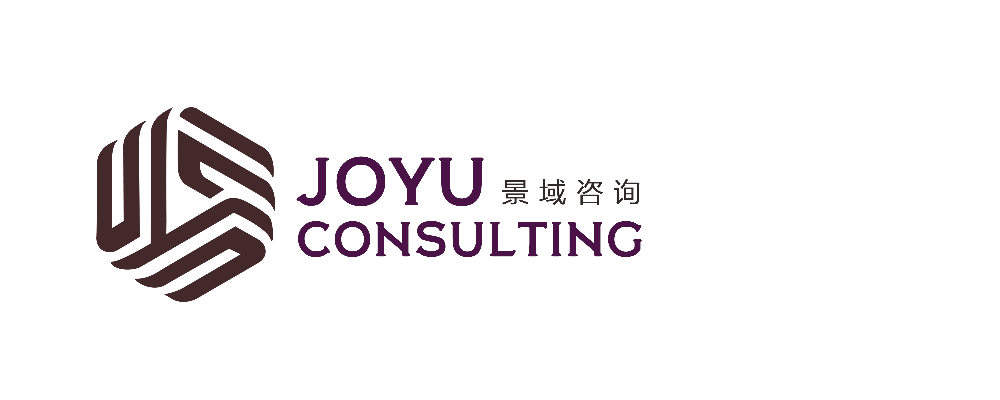

理解真实
走进地方与市场，理解文化资源、目标客群与项目现状。

开启合作 ↗
CONTENT · CULTURE · DESTINATION
让内容生长，
让目的地被看见。
以新媒体连接人与城市，以产业思维激活文化旅游价值。
从洞察与规划，到投资与运营，与每一个值得生长的项目同行。
01 / ABOUT JINGYU
好的内容，让一座城被看见。
好的运营，让一份热爱留下来。
景域咨询聚焦新媒体投资与运营、文化旅游产业规划，关注内容传播与产业发展的连接。我们从地方文化、市场需求与商业逻辑出发，为品牌、目的地和文旅项目梳理方向，推动创意转化为可持续的经营行动。
02 / OUR EXPERTISE
从内容影响力到产业生命力，
回应不同阶段的发展命题。
NEW MEDIA INVESTMENT & OPERATIONS
围绕内容资产与商业价值，连接媒体投资、账号运营、内容生产及商业化，建立持续生长的品牌影响力。
沟通业务需求 ↗CULTURAL TOURISM PLANNING & STRATEGY
立足资源禀赋与客群需求，从产业定位、产品策划到实施路径，让地方文化形成可体验、可传播、可经营的文旅产品。
沟通业务需求 ↗CITY BRANDING & INTEGRATED COMMUNICATIONS
提炼城市独有的文化表达，将品牌定位、传播内容与线上线下活动相连接，让城市的吸引力走进公众的日常。
沟通业务需求 ↗TOURISM BUSINESS DEVELOPMENT & OPERATIONS
从经营目标倒推业态与资源配置，统筹招商策略、合作伙伴引入、开业筹备和运营提升，让项目从规划走向日常经营。
沟通业务需求 ↗DIGITAL TOURISM & CONTENT INNOVATION
探索数字内容与在地体验的融合，用新的叙事方式、新的互动场景与新的文旅产品，让文化在当下获得新的表达。
沟通业务需求 ↗03 / OUR APPROACH
连接研究、创意与经营，
让每一步都服务于项目的真实需求。
走进地方与市场，理解文化资源、目标客群与项目现状。
明确价值定位、商业模式与发展优先级，建立共同目标。
将策略转化为产品、品牌与传播内容，形成可执行方案。
围绕经营反馈与用户体验复盘调整，让项目持续成长。
04 / PERSPECTIVES
05 / START A CONVERSATION
一个品牌、一座城市，或一个正在酝酿的想法。
先梳理你的需求，一起找到项目的出发点。